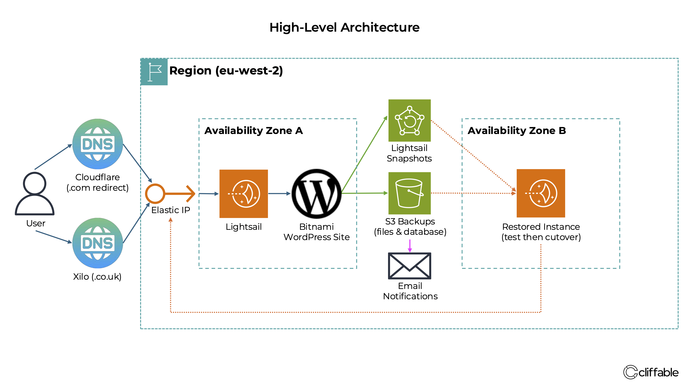

Published May 2026
Rethinking Backups After a Failed Restore
A failed restore test on a production WordPress backup forced me to rethink my entire backup strategy. What initially looked like a reliable solution turned out to be fragile, complex and difficult to recover from under pressure.
{kind=link}

Original layered backup strategy combining Lightsail snapshots, S3 backups and manual restoration procedures.
The backup strategy looked good on paper
For my production WordPress site, I originally used a layered backup approach combining automatic AWS Lightsail snapshots with separate WordPress file and MariaDB database backups stored in Amazon S3.
Lightsail automatic snapshots provided fast full-server recovery, but AWS limits automatic Lightsail snapshot retention to a rolling 7-day window.
To retain older backups, I also configured a cron job running on the server which created separate backups of WordPress files and database exports. These backups were uploaded to Amazon S3 daily using a 90-day lifecycle policy to automatically delete older backup files.
Success or failure notifications were sent automatically each day so I could confirm backup jobs had completed successfully.
On the surface, the system appeared comprehensive:
But I eventually realised I had focused too much on backup creation and not enough on recovery.
The system prioritised preserving backup data rather than simplifying restoration.
- Lightsail snapshots were fairly easy to restore, but were limited to 7-day retention
- Restoring backups older than 7 days required manually rebuilding WordPress files and MariaDB data from S3 backups
- Multiple moving parts increased operational complexity
- Restores depended on several manual steps being performed correctly
- The process was too complicated and time-consuming to deal with in a site-down emergency
The restore test failed
The real problem only became visible during a restore test.
Although the backup files themselves existed, the full restore process proved unreliable and far more fragile than expected. Rebuilding the environment cleanly was not straightforward, especially on the Bitnami WordPress stack running on AWS Lightsail. I had multiple problems trying to restore files to MariaDB, especially permissions errors.
At that point I recalled what I had read many times:
- Backups are meaningless until restores are tested successfully

Revised snapshot-first recovery architecture with automated retention, monitoring and simplified restoration workflows.
Redesigning the recovery strategy
After the failed restore test, I completely changed direction.
Instead of relying on layered application-level backups, I moved towards a snapshot-first strategy using AWS Lightsail snapshots combined with automated retention policies.
The new approach prioritised operational simplicity:
- Entire server state captured in a single snapshot
- Faster and more predictable recovery process
- Fewer dependencies during restoration
- Simpler testing and validation
- Reduced operational overhead
The revised approach kept Lightsail automatic snapshots for short-term daily recovery, while adding a separate automated weekly snapshot system for long-term retention.
AWS EventBridge triggers a Lambda function each week to create manual Lightsail snapshots automatically. These snapshots are retained for up to 12 months, bypassing the native 7-day retention limitation of automatic Lightsail snapshots.
CloudWatch monitoring and SNS email alerts were also added so failed snapshot operations could be detected automatically instead of relying on manual verification.
What changed most
The biggest shift was psychological as much as technical.
I stopped thinking about backups as files being generated successfully, and started thinking about them as recovery systems that needed to work reliably under stress.
That changed how I evaluate operational risk across the entire platform.
Conclusion
The failed restore test ended up being one of the most valuable operational lessons I’ve had so far. It exposed weaknesses that would have remained invisible until a real production incident occurred.
Since then, I’ve become much more focused on reducing recovery complexity, simplifying operational procedures and designing systems that are easier to restore quickly and reliably.
Related project
This work was implemented as part of the WordPress on AWS Lightsail project.